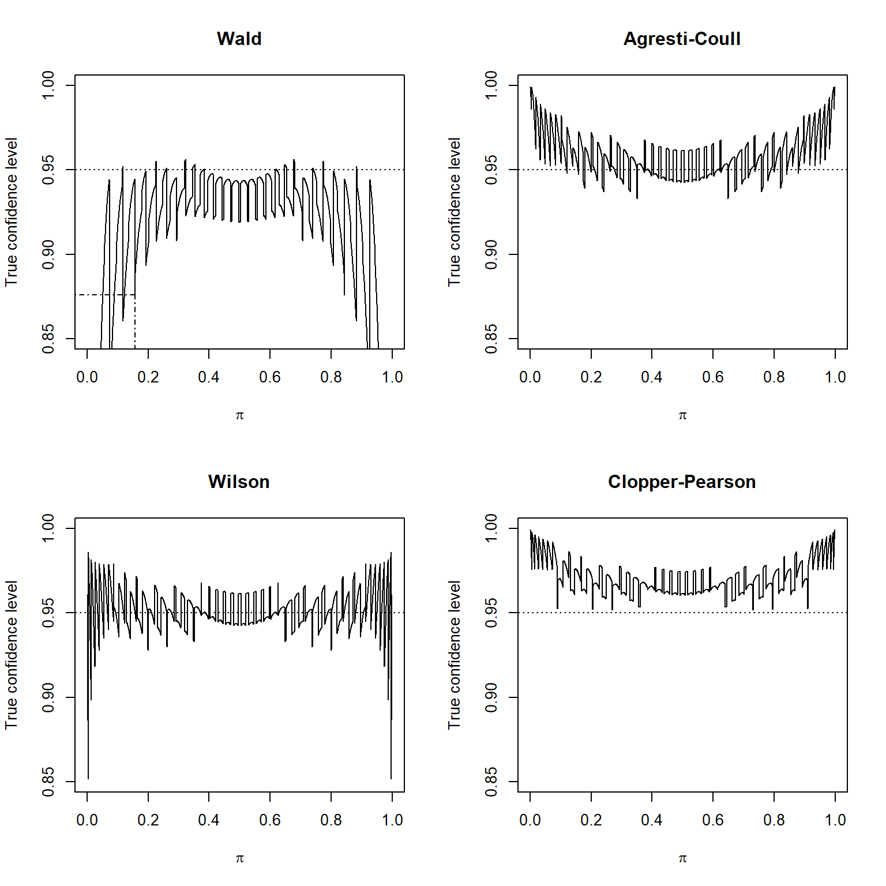

One and Two binary groups
Distributions
- Reading
CBCH1 (skip 1.2.6 and 1.2.7)
Bernoulli distribution
parameters
- Y is 0 or 1. Has one parameter \pi
- E[Y] = \pi, \text{V}[Y]=\pi(1-\pi)
PMF
P(Y=y) = \pi^y(1-\pi)^{1-y}
Binomial distribution
parameters
- Multiple bernoulli trials. Suppose we have
ntrials - E[Y] = n\pi, \text{V}[Y]= n\pi(1-\pi)
PMF
P(W=w) = {n \choose w} \pi^w(1-\pi)^{1-w}
Likelihood Function
- What is Likelihood function?
\begin{align} L(\pi|y_1,y_2,....y_n) &= P(Y_1 = y_1)\cdot ... P(Y_n=y_n)\\ &=\pi^w(1-\pi)^{n-w} \end{align}
MLE
Maximum Likelihood Estimation
Suppose your aunt sends you an
unfair coin, but you forgot what your order was.- To figure out the probability of success, you flip the coin three times and collect the following data (we are defining heads as success here):
HTH
For a hypothesized Bernoulli parameter \pi, what is the likelihood of the data? Your answer should be a function of \pi.
likelihood function is:
\begin{aligned} L(\pi|x_1,x_2,x_3) &= P(X_1 = x_1,X_1 = x_2, X_3 = x_{3}) \\ &= \prod_{i=1}^{3} P({X=x_i}) \\ &= \prod_{i=1}^{3} \pi^{x_i}(1-\pi)^{1-x_i} \\ &= \pi^{\sum_{i=1}^{3} x_i} (1-\pi)^{\sum_{i=1}^{3}(1- x_i)} \\ \end{aligned}
- log of the likelihood function
\begin{aligned} Log[L(\pi|x_1,x_2,x_3)] &= \\ & \left( {\sum_{i=1}^{3} x_i} \right)log(\pi) + \left({\sum_{i=1}^{3}(1- x_i)} \right) log(1-\pi)\\ \end{aligned}
- What is the natural log of the likelihood of the data? Write an R function that computes the log likelihood.
- Graph your function and visually estimate what the maximum likelihood estimate for \pi is.
We know that MLE of \pi is: \hat{\pi} =\frac{\sum x_i}{N} = \frac{2}{3}
and in this question, it’s:
\hat{\pi} = \frac{2}{3}
- In the plot, we can see that log-likelihood has a single peak at 2/3.
One binary group
Interval vs Hypothesis test
Given observation, knowing distribution, we are estimating the parameter of the function.
Since this is an estimator, it will change each time we collect sample.
We talked about Wald confidence interval, similar to what we talked about in W203.
- It rely on the underlying normal distribution approximation for the maximum likelihood estimator. (see page 11)
When only one simple parameter is of interest, such as \pi here, we generally prefer confidence intervals over hypothesis tests, because the interval gives a range of possible parameter values.
We can typically infer that a hypothesized value for a parameter can be rejected if it does not lie within the confidence interval for the parameter.
However, there are situations where a
fixed known valueof \pi, say \pi_0 , is of special interest, leading to a formal hypothesis test of
H_0 : \pi = \pi_0 H_a : \pi \not= \pi_0
Interval test
- See page 11 and 12

Hypothesis test
- Situations where a
fixed known valueof \pi, say \pi_0 , is of special interest, leading to a formal hypothesis test of
H_0 : \pi = \pi_0 H_a : \pi \not= \pi_0
Hypothesis testing using Wilson interval, score test statistic
This statistic is called the score test statistic
Z_0 = \frac{\hat{\pi}-\pi_0}{\sqrt{\pi_0(1-\pi_0)/n}}
When H_0 is true, Z_0 should have approximately standard normal distribution.
The book recommend using the
score testwhen performing a test for \pi (see page 17)
Hypothesis testing using likelihood ratio test (LRT)
- LRT statistics look like this.
\Lambda = \frac{\text{Maximum of likelihood function udner } H_0}{\text{Maximum of likelihood function udner } H_A}
LRT is used to calculate confidence intervals in some more complicated contexts where better intervals are not available.
This interval is better than the wald interval in most problems. (see page 10)
Hypothesis testing using Transformed LRT

-2\text{log}(\Lambda)
- Above statistic is called
transformed LRTstatistisc and have an approximate \chi^2 distribution.
Two binary groups
Consider Bernoulli trial is measured on units that can be classified into groups.
- Female and male
- Fresh and Salt-Water fish
- Larry birds free throw LINK
- Basketball fans and commentators often speculate that the result of a second free throw might depend on the result of the first.
- Salk vaccine clinical trial. LINK
- Randomized experiment.
- 57 out of 200,745 developed polio during the study period
- 142 out of 201,220 developed polio during the placebo group.
Does the vaccine help to prevent polio?
We have two random variables Y_1 and Y_2 and their outcome is independent of each other.
We have
TWO BINARY VARIABLES
Interval test
- Wald Confidence interval using normal approximation.
- Book recommend using the Agresti-Caffo method
Larry Bird’s free throw shooting
c.table <- array(data = c(251, 48, 34, 5), dim = c(2,2),
dimnames = list(First = c("made", "missed"), Second = c("made", "missed")))
c.table Second
First made missed
made 251 34
missed 48 5#conditional probabilities
pi.hat.table <- c.table/rowSums(c.table)
#get the pi estimates
pi.hat1 <- pi.hat.table[1,1]
pi.hat2 <- pi.hat.table[2,1]
#set type I error
alpha <- 0.05Wald Confidence interval
[1] -0.11218742 0.06227017Agresti-Caffo confidence interval
[1] -0.10353254 0.07781192- Because these interval contains 0, we cannot reject H_0
Hypothesis test
H_0: \pi_1 - \pi_2 = 0 H_0: \pi_1 - \pi_2 \not= 0
Person chi-square test
So, this is the test for TWO BINARY VARIABLES.
Create a statistic comparing the difference between what was observed and what was predicted under H_0 that there is no difference.
This statistic following \Chi^2 with n_1 and n_2 degress of freedom.
\chi^2 = \sum_{j=1}^2\frac{(w_j-n_j\bar{\pi})^2}{n_j\bar{\pi}(1-\bar{\pi})}
LRT test
-2\text{log}({\Lambda})= ... - if -2\text{log}({\Lambda}) > \chi^2_{..}^{..}, Reject H_0
Score test
- Use score statistic to perform test. Score test performs the best when the same size is small.
prop.test(x = c.table , conf.level = 0.95, correct = FALSE)
2-sample test for equality of proportions without continuity correction
data: c.table
X-squared = 0.27274, df = 1, p-value = 0.6015
alternative hypothesis: two.sided
95 percent confidence interval:
-0.11218742 0.06227017
sample estimates:
prop 1 prop 2
0.8807018 0.9056604 correct = FALSEargument value guarantees that the test statistic is calculated as shown Z_0.The
prevalence of a diseaseis the proportion of a population that is afflicted with that disease
Relative Risk
- The problem with basing inferences on \pi_1 - \pi_2 is that it measures a quantity whose meaning changes depending on the value of \pi_1,\pi_2
- \pi_1 = 0.51 \text{ and } \pi_2 = 0.5
- \pi_1 = 0.011 \text{ and } \pi_2 = 0.001
In both cases, 1. \pi_1 - \pi_2 = 0.01.
In case (1), this change is small compare to 1. $_1 _2 $
In case (2), this change is 11 times the chance of $_2 $. Suppose \pi_2 is the chance of nonsmoking population getting a disease, then, the chance is 11 times the chance of nonsmoking population getting a disease.
To capture this information, we use another statistic called
relative risk
\text{RR} = \frac{\pi_1}{\pi_2}=\frac{0.011}{0.001} - Smokers are 11 times as likely to have the disease than nonsmokers - Smokers are 10 times more likely to have that disease than nonsmokers. (see page 38)
- \hat{RR} is MLE and using normal approximation is rather poor for MLE and not recommended. Use normal approximation on \text{log}(\hat{RR})
RR of Salk vaccine clinical trial
c.table <- array(data = c(57, 142, 200688, 201087), dim =
c(2,2), dimnames = list(Treatment = c("vaccine", "placebo"), Result = c("polio", "polio free")))
c.table Result
Treatment polio polio free
vaccine 57 200688
placebo 142 201087#calculate conditional probability
pi.hat.table <- c.table/rowSums(c.table)
pi.hat.table Result
Treatment polio polio free
vaccine 0.0002839423 0.9997161
placebo 0.0007056637 0.9992943#estimated parameters to be compared
pi.hat1 <- pi.hat.table[1,1]
pi.hat2 <- pi.hat.table[2,1]
RR <- pi.hat1/pi.hat2
RR[1] 0.4023763- The
estimatedprobability of contracting polio is 0.4 timesas likelyfor the vaccine group that for teh placebo group.
#set type 1 error
alpha <- 0.05
n1 <- sum(c.table[1,])
n2 <- sum(c.table[2,])
var.log.rr <- (1-pi.hat1)/(n1*pi.hat1) + (1-pi.hat2)/(n2*pi.hat2)
ci <- exp(log(pi.hat1/pi.hat2) + qnorm(p = c(alpha/2,
1-alpha/2)) * sqrt(var.log.rr))
ci[1] 0.2959316 0.5471084Odds
Odds
- Odds can also be used as a similar measure as relative risk.
- Odds are defined as the probability of a success divided by the probability of a failure.
\text{Odds} = \frac{\pi}{1-\pi} = \frac{0.1}{1-0.1}= \frac{0.1}{0.9} - This will be referred to as 9-to-1 odds against.
- Odds have no upper limit unlike probabilities.
- Like RR, odds are estimated with MLE.
Odds ratios
- Determining whether or not an
odds ratiois equal to 1, greater than 1 or less than 1 is often of interest.
\text{OR} = \frac{\text{Odds}_1}{\text{Odds}_2}
The estimated odds of a success is \hat{\text{OR}} times as larag as
in group 1than ingroup 2Since OR is a statistic, each time you get a sample and estimate, you will get difference value. You can calculate CI of this estimate.
| Odd ratio | Meanining (page 40) |
|---|---|
| 1 | Odds are not dependent on the group (i.e., the odds of success are independent of the group designation) |
| >1 | The odds of a success are higher for group 1 |
| 1< | The odds of a success are higher for group 2 |
OR of Salk vaccine clinical trial
[1] 0.4022[1] 4.972972e-06[1] 0.30 0.55Matched pair data
w_1 and w_2 were independent random variables in the examples shown before. LINK
There are other situations where the two probabilities being compared are
dependentrandom variables.This occurs with
matched pairdata, where two binary response observations, X and Y are made on eachsample unitThe desired comparision between success probabilities for X and Y involves two correlated statistics.
Prostate cancer diagnosis procedures
- (P44) Zhou and Qin (2005) discuss a study that was used to compare the diagnostic accuracy of magnetic resonance imaging (
MRI) andultrasoundin patients who had been established as havinglocalized prostate cancerby a gold standard test.
Hypothesis testing
- This is comparing marginal probabilities
H_0: \pi_{+1}=\pi_{1+} H_a: \pi_{+1}\not= \pi_{1+}
- We can use
wald test statistic(the book uses Z_0 notation which was used for score statistic) orMcNemar's test statistic,Mwhich has approximately \chi_^2 distribution for large samples.- Reject H_0 when
M> \chi^2_{..}
- Reject H_0 when
#get marginal distribution
n <- sum(c.table)
pi.hat.plus1 <- sum(c.table[,1])/n
pi.hat.1plus <- sum(c.table[1,])/n
#evaluate the difference by
#subtracting the sample statistics
data.frame(pi.hat.plus1 , pi.hat.1plus ,
diff = pi.hat.plus1 - pi.hat.1plus) pi.hat.plus1 pi.hat.1plus diff
1 0.0004950569 0.499398 -0.4989029c.table <- array(data = c(4, 3, 6, 3), dim = c(2,2), dimnames =
list(MRI = c("Localized", "Advanced"), Ultrasound =
c("Localized", "Advanced")))
c.table Ultrasound
MRI Localized Advanced
Localized 4 6
Advanced 3 3mcnemar.test(x = c.table , correct = FALSE)
McNemar's Chi-squared test
data: c.table
McNemar's chi-squared = 1, df = 1, p-value = 0.3173Interval
Wald confidence interval
data:
95 percent confidence interval:
-0.5433238 0.1683238
sample estimates:
[1] -0.1875Agresti-Min confidence interval- You also get difference sample esitmate.
data:
95 percent confidence interval:
-0.5022786 0.1689453
sample estimates:
[1] -0.1666667Larger contingency tables
There are many instances where more than two groups exist (i.e., there are more than two rows within a contingency table)
Once more rows are added to a contingency table, it is often easier to perform the analysis with a binary regression models as covered in Chapter 2.